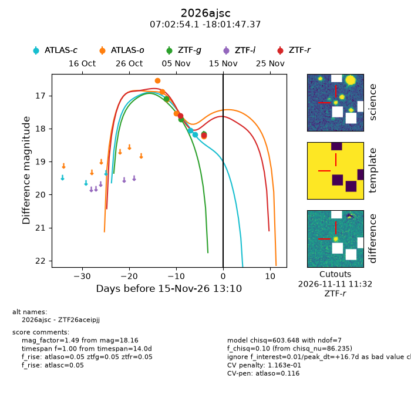
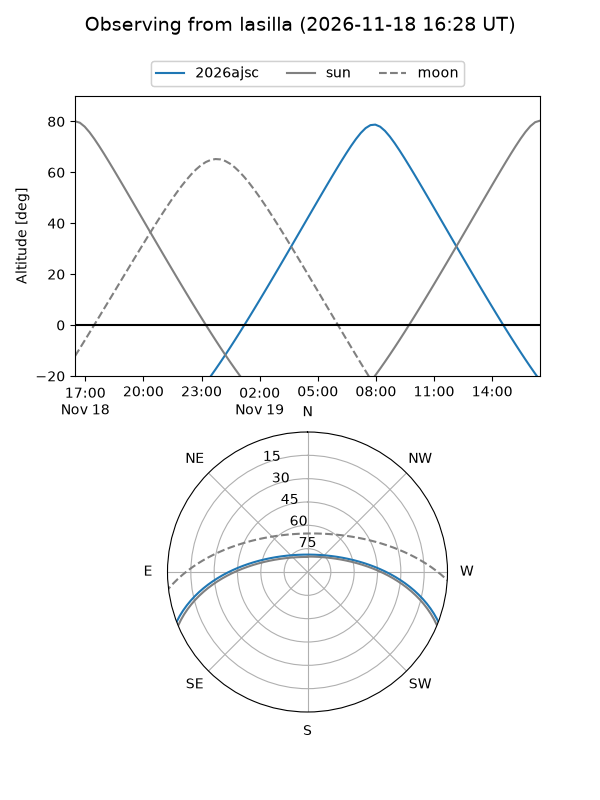
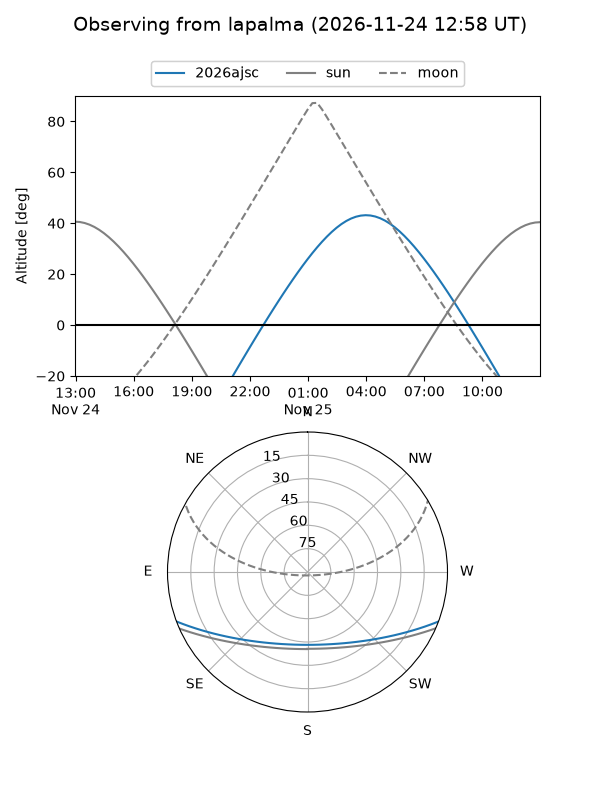
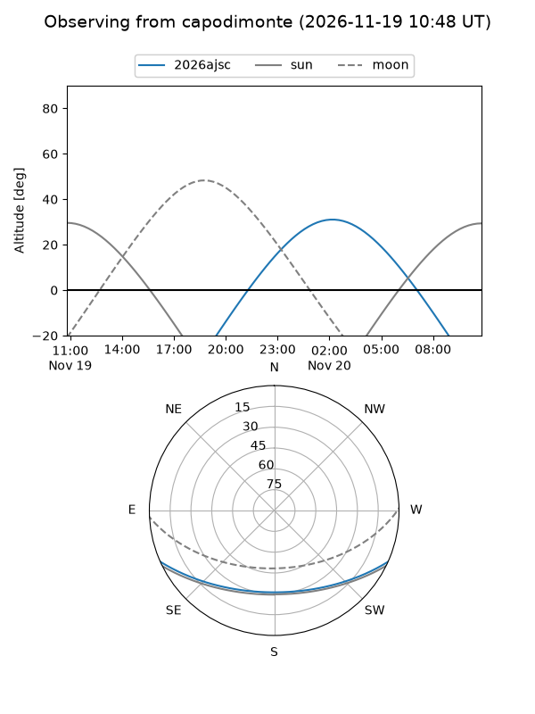
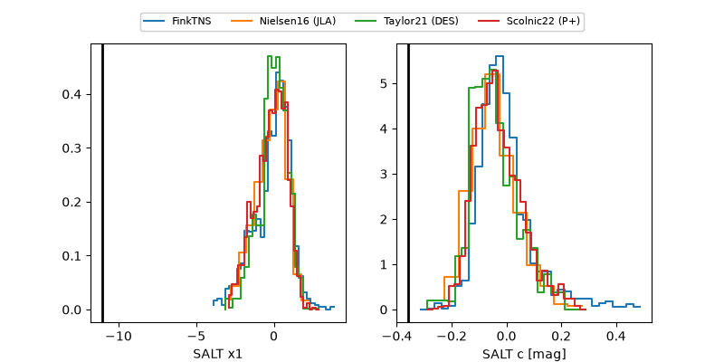

2026ajsc
Target 2026ajsc at 2026-11-15 13:16
Aliases and brokers:
FINK-ZTF: ztf.fink-portal.org/ZTF26aceipjj
Lasair-ZTF: lasair-ztf.lsst.ac.uk/objects/ZTF26aceipjj
ALeRCE-ZTF: alerce.online/object/ZTF26aceipjj
YSE-PZ: ziggy.ucolick.org/yse/transient_detail/2026ajsc
TNS name: wis-tns.org/object/2026ajsc
Direct TNS query: direct search
alt names
ZTF26aceipjj (ztf,fink_ztf)
2026ajsc (tns,yse)
Coordinates:
equatorial (ra, dec) = 105.7253,-18.02982
equatorial (HMS+DMS) = 07:02:54.07,-18:01:47.37
galactic (l, b) = (230.3056,-5.67126)
Flags:
likely cv: !!
CV pen: 0.11634715688670144
peak dt: +16.7
Photometry:
last atlasc=18.19, atlaso=18.23, ztfg=18.16, ztfr=18.19
2 atlasc, 5 atlaso, 3 ztfg, 2 ztfr detections
Lightcurve

Visibility



Additional plots
